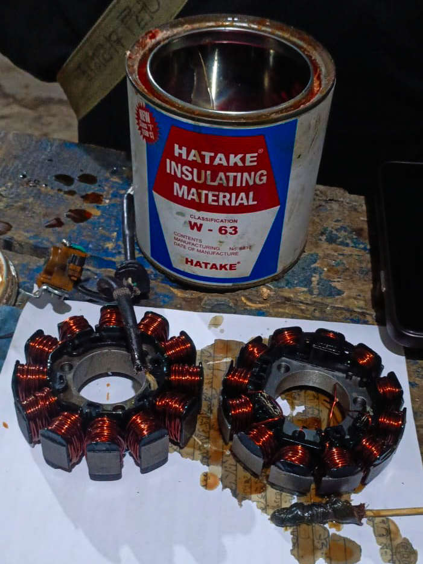
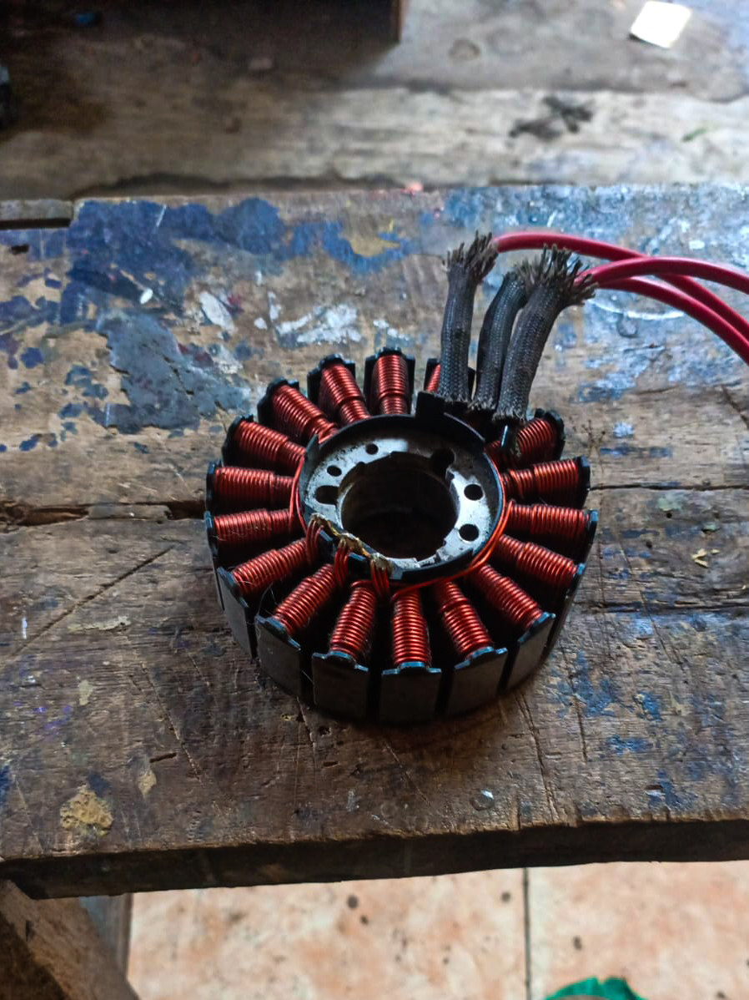
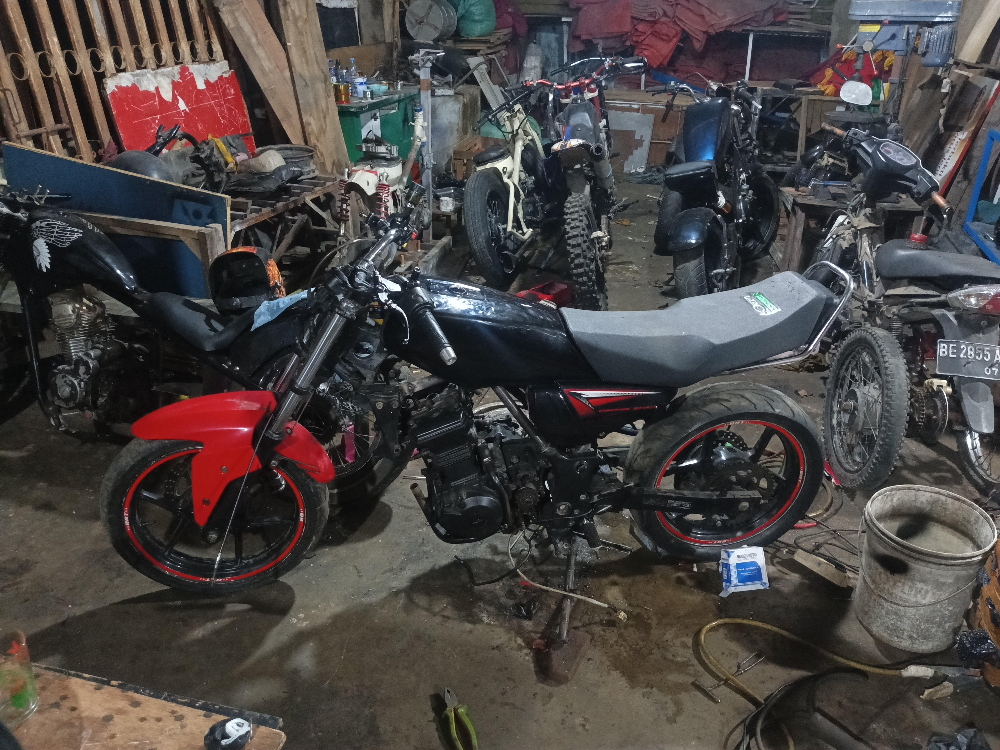

Perbaikan sepul Yamaha Byson & Jupiter MX
Jumat, 12 September 2025


Perbaikan sepul dilakukan dengan menggulung ulang kawat tembaga pada inti besi.
Sepul berfungsi sebagai penghasil arus listrik yang sangat penting untuk mengisi aki, menyalakan lampu, serta menunjang sistem kelistrikan motor.
Jika lilitan kawat mengalami kerusakan atau terbakar, maka daya listrik akan melemah bahkan bisa hilang sama sekali.
Proses penggulungan ulang dilakukan dengan hati-hati agar jumlah lilitan dan arah gulungan sesuai standar, sehingga arus yang dihasilkan stabil.
Setelah selesai digulung, sepul dilapisi dengan bahan isolasi khusus agar tahan panas, tidak mudah korslet, serta memperpanjang usia pemakaian.
Dengan perbaikan ini, sepul kembali befungsi normal dan motor dapat digunakan dengan sistem kelistrikan yang optimal.
Perubahan Motor Kawasaki Ninja 250 ke RX King
Rabu, 10 September 2025


Modifikasi ini merupakan proyek perubahan motor Kawasaki Ninja 250 menjadi bergaya RX King.
Prosesnya cukup rumit karena harus menyesuaikan rangka, kaki-kaki, serta posisi dudukan agar sesuai dengan konsep RX King yang lebih ramping dan ringan.
Beberapa bagian body dirombak,vseperti tanki, jok, dan spakbor, agar menyerupai tampilan khas RX King.
Mesin tetap menggunakan basis Ninja 250 yang bertenaga, sehingga motor tidak hanya tampil mirip RX King tetapi juga memiliki performa yang jauh lebih tinggi.
Pengerjaan membutuhkan ketelitian, mulai dari sistem kelistrikan, penempatan komponen, hingga detail finishing pada cat dan aksesoris.
Hasil akhir menghadirkan kombinasi unik: tampilan legendaris RX King yang ikonik dengan tenaga besar khas Ninja 250, membuat motor ini terlihat klasik namun tetap modern dan garang di jalanan.
Pembuatan Roda Tiga Honda Vario 160 Baru
Selasa, 09 September 2025


Proyek modifikasi ini adalah pembuatan roda tiga untuk Honda Vario 160 keluaran terbaru.
Motor matik modern ini diubah agar memiliki dua roda tambahan di bagian belakang, sehingga lebih stabil dan aman digunakan, terutama untuk kebutuhan khusus atau pemakaian jarak jauh.
Proses pengerjaan dimulai dari pembuatan rangka tambahan berbahan besi yang kuat, lalu disesuaikan dengan dudukan sasis bawaan motor agar tetap kokoh dan presisi.
Posisi roda belakang dipasang menggunakan sistem as yang dibuat khusus, lengkap dengan dudukan bearing dan rantai penggerak agar roda bisa berfungsi optimal.
Seluruh konstruksi diuji agar seimbang, mampu menahan beban, dan tidak mengganggu kinerja mesin maupun sistem CVT.
Dengan modifikasi ini, Honda Vario 160 tetap mempertahankan tenaga mesin bawaanya yang responsif, namun tampil dengan format roda tiga yang lebih stabil, fungsional, serta nyaman untuk digunakan oleh siapa saja.